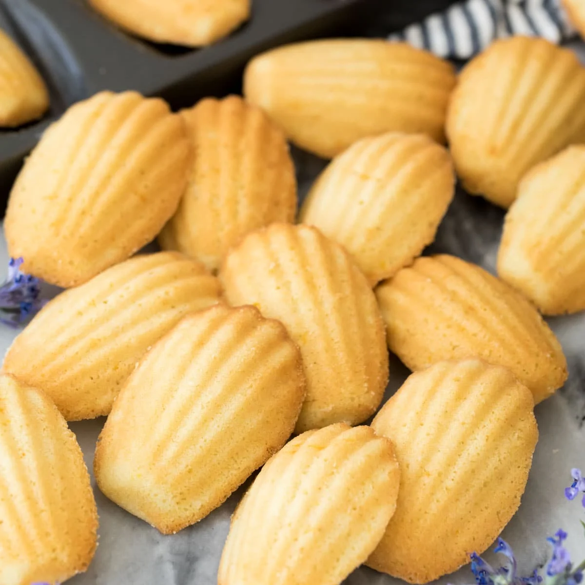

Madeleines

Buttery vanilla madeleines
Madeleine or petite madeleine is a traditional small cake from Commercy and Liverdun, two communes of the Lorraine region in northeastern France.
They are very small sponge cakes with a distinctive shell-like shape
Ingredients
- Madeleine pan
- 1 tbsp lemon zest
- 4 eggs
- 2/3 cup sugar
- 1 1/2 tsp vanilla extract
- 1/4 tsp salt
- 1/2 cup melted butter
Steps
- In a large bowl, combine and mix eggs, vanilla extract
- If you want a lemon flavor zest lemon
- Sift and add flour to bowl
- Add lemon zest if wanted
- Add melted butter and fold in
- Grease madeleine pan and spoon in mixure
- Bake at 350 degrees for 14-17 minutes